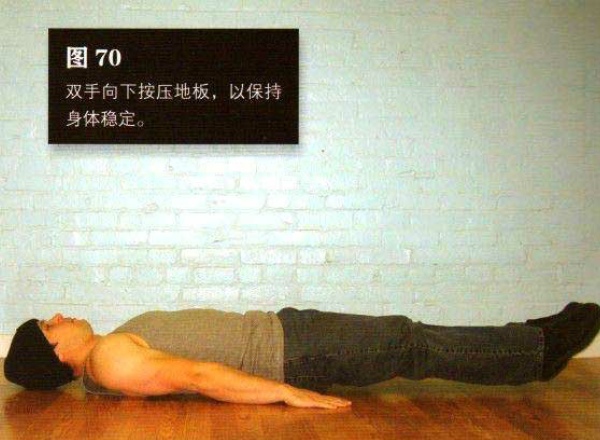
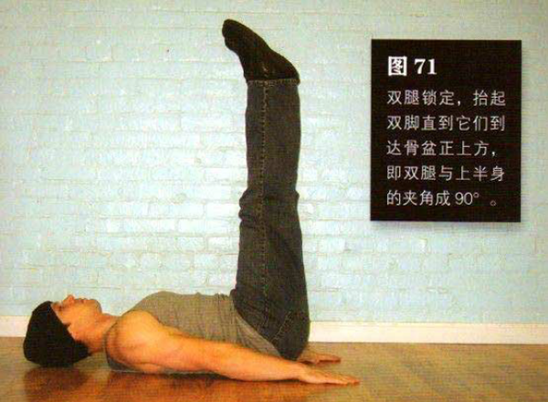

平躺在地上，面部朝上。双脚并拢，双腿伸直，双手置于身体两侧。抬起双脚，使其距离地面约 2-5 厘米。双手向下按压地板，以保持身体稳定。这是该动作的起始姿势（图 70）。
双腿锁定，抬起双脚直到它们到达骨盆正上方，即双腿与上半身的夹角成 90°这是该动作的结束姿势（图 71）
抬脚的过程中呼气，腹部保持收紧。至少要用 2 秒钟平缓地完成该动作，不要用猛劲。停顿片刻，然后反向动作，降低双腿的过程中吸气。到达起始姿势后略作停顿，再重复。在整个动作过程中，膝盖始终要锁定，双脚不能接触地面，直到一组完成之后方可。
初级标准：1 组，5 次
中级标准：2 组，各 10 次
高级标准：2 组，各 20 次